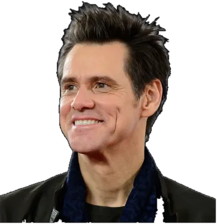

De un vistazo
- Eje Existencial
- Felicidad
- Tríada
- Perspectiva
- C-Modes
- C6 · C8
- Desde la Confianza, toma rasgos del
- E-Mode 5
- Desde el Miedo, toma rasgos del
- E-Mode 1
Desde el Miedo
Perspectiva · lo que piensa
Tengo que estar alegre sin sufrir.
Necesito garantizar estar satisfecho, sin sufrimientos.
Afectiva · lo que siente
Miedo a quedar atrapado en el dolor, el sufrimiento o la privación.
Efectiva · lo que hace
Evitar el dolor.
Escapismo frenético con estímulos.
Desde la Confianza
Perspectiva · lo que piensa
Soy feliz.
Tengo y tendré todo lo necesario para ser feliz.
Afectiva · lo que siente
Serenidad y gratitud.
Efectiva · lo que hace
Ser y hacer felices a otros.
Encuentra satisfacción en el presente.
Ejemplos
- Peter Pan«Peter Pan»

Jim CarreyActor- Jack Sparrow«Piratas del Caribe»
- Anna«Frozen»
El Eje Existencial de la Felicidad
El Eje Existencial de la Felicidad se configura cuando, en los primeros años de vida, el niño o la niña desarrolla una atención particular hacia el ámbito del bienestar, el disfrute y la plenitud. Este Eje se vincula con el mundo de las posibilidades, la curiosidad, la variedad de experiencias y la intención de vivir la vida de manera alegre y satisfactoria.
Desde esta perspectiva, la existencia comienza a organizarse en torno a una disposición natural a buscar lo que entusiasma, a explorar lo nuevo, a encontrar el lado positivo de las situaciones y a responder al entorno con optimismo y energía. Es un modo de estar en el mundo en el que la alegría, la libertad para explorar y la satisfacción se presentan como referencias significativas y orientadoras.
La Felicidad se convierte así en el centro desde el cual se organiza la experiencia personal. La atención existencial se enfoca en cómo experimentar bienestar y plenitud, cómo mantener abiertas las posibilidades y cómo atravesar la vida sin quedar atrapado en el dolor o la privación: un Eje estructurante que da sentido y dirección a la vida.
El Eje de la Felicidad vivido desde el Miedo
La persona teme profundamente quedar atrapada en el dolor, en la frustración o en situaciones que percibe como limitantes. Intenta mantenerse siempre un paso adelante: anticipa opciones, planifica nuevos placeres o evita las emociones que podrían conectarla con el vacío o la angustia. El entusiasmo y la positividad se convierten en estrategias de defensa frente a lo que no quiere sentir.
Desde esta vivencia, puede desarrollar:
- Evasión emocional, evitando el contacto profundo con el sufrimiento propio o ajeno.
- Dispersión y búsqueda constante de estímulos, como forma de no quedarse en el vacío.
- Dificultad para sostener procesos que impliquen esfuerzo, dolor o espera.
- Tendencia a minimizar lo negativo, negando o relativizando lo que duele.
- Miedo a ser restringida o a perder libertad, lo que puede generar rechazo a los límites o a los compromisos.
La persona puede parecer optimista y entusiasta, pero muchas veces lo es como forma de evitar la profundidad emocional o el encuentro con los aspectos menos agradables de la realidad. El placer se convierte en un refugio, y el sufrimiento, en una amenaza a evitar a toda costa.
El Eje de la Felicidad vivido desde la Confianza
La persona desarrolla una relación libre con el bienestar: entiende que es posible disfrutar sin necesidad de negar el malestar ni de evitar los aspectos dolorosos de la vida. Valora lo positivo y lo estimulante, pero también puede atravesar situaciones difíciles sin quedar condicionada por ellas.
Desde esta vivencia, desarrolla:
- Capacidad de disfrutar del presente sin depender de la anticipación constante de nuevos estímulos o de experiencias más gratificantes.
- Habilidad para atravesar el malestar sin evitarlo ni sentir que va a quedar atrapada en él.
- Un bienestar sostenido, que no depende de estímulos permanentes sino de una disposición interna estable.
- Entusiasmo y creatividad orientados a generar experiencias significativas y sostenibles.
- Capacidad de elegir con criterio, integrando deseo, realidad y consecuencias, sin actuar solo por impulso o evasión.
La Felicidad no se reduce al placer inmediato ni excluye el malestar: forma parte de una vida activa, consciente y orientada a la satisfacción personal y relacional, incluso en escenarios complejos.
Contexto infantil
Explorar el contexto infantil permite comprender más profundamente cómo ciertos rasgos se desarrollan desde una edad temprana. Muchos de los patrones de comportamiento que observamos en los adultos tienen sus raíces en experiencias y dinámicas familiares de la infancia. Comprender el contexto en el que se estableció el modo en que enfrentamos tempranamente nuestra existencia nos permite entender cómo enfrentamos hoy las situaciones y los desafíos actuales.
Niños entusiastas y curiosos
Desde una edad temprana, el niño con E-Mode 7 tiende a destacarse por su energía positiva, su entusiasmo y su curiosidad por el mundo que lo rodea.
- Son juguetones, extrovertidos y buscan constantemente nuevas experiencias y aventuras.
- Su autoestima suele estar vinculada a su capacidad para vivir la vida de manera positiva y alegre.
- Se sienten más satisfechos cuando son reconocidos por su creatividad y su espíritu optimista.
- Suelen ser vistos como niños «caraduras», graciosos y consentidos, que siempre obtienen lo que quieren gracias a su ingenio y su encanto.
- A veces les cuesta sostener la atención en el tiempo y pueden aburrirse fácilmente si no están estimulados.
- Pueden tener una resistencia natural a las restricciones y a las reglas estrictas.
- Buscan la libertad y la independencia, a veces evitando las situaciones difíciles o desagradables a través de la distracción y la evasión.
En el juego y en las situaciones sociales disfrutan de la compañía de amigos y compañeros, muestran una habilidad natural para encontrar la diversión en casi cualquier situación y pueden ser particularmente imaginativos.
Contexto familiar positivo
- Un entorno lleno de estímulos, alegría y libertad para explorar, donde la curiosidad natural fue alentada.
- Amplias oportunidades para embarcarse en nuevas aventuras, actividades y pasatiempos, que le permitieron desarrollar un abanico de intereses y habilidades.
- Experiencias tempranas marcadas por la seguridad y el optimismo: el mundo como un lugar lleno de posibilidades por descubrir.
- Figuras parentales o cuidadores positivos y entusiastas, con un apoyo incondicional que reforzó el valor de perseguir la felicidad y satisfacer la curiosidad.
- Un ambiente emocionalmente cálido y acogedor, donde era seguro expresar alegría y buscar lo que genuinamente le interesaba.
- Énfasis en la adaptabilidad y la resiliencia: los desafíos como oportunidades para aprender y crecer, y las dificultades como algo que se supera con creatividad y una actitud positiva.
- La enseñanza de que la felicidad es una elección viable y valiosa en la vida.
Mensaje percibido en la infancia: «Vas a estar cuidado y atendido».
Contexto familiar negativo
- Falta de estabilidad emocional o física, que lo llevó a buscar el escapismo y la gratificación inmediata para lidiar con el estrés o la ansiedad.
- Necesidades emocionales que no fueron atendidas de manera consistente, con poca previsibilidad en el cuidado y la atención.
- Inconsistencia en el afecto, que generó la sensación de tener que buscar constantemente nuevas experiencias y placeres para llenar un vacío o alejarse de la tristeza y la soledad.
- La falta de un ambiente seguro, que lo impulsó a evitar sus emociones más profundas y a buscar estímulos externos que le dieran una satisfacción o una euforia pasajera.
- La independencia y la autosuficiencia aprendidas como defensa contra la decepción o el rechazo.
- La percepción de un mundo incierto y potencialmente privado de alegría, que lleva a priorizar el propio placer por encima de las relaciones profundas y estables, por miedo a la vulnerabilidad y al dolor.
- Conflictos familiares, problemas económicos u otras formas de inestabilidad, que instalaron la creencia de que hay que aprovechar al máximo el presente porque el futuro es incierto, con dificultad para comprometerse con planes a largo plazo o aceptar limitaciones.
Mensaje percibido en la infancia: «No está bien depender de nadie para nada».
Desde el Miedo
Qué piensa (Perspectiva), qué siente (Afectiva) y qué hace (Efectiva) el E-Mode 7 desde la dinámica del Miedo.
| PiensaPerspectiva | SienteAfectiva | HaceEfectiva |
|---|---|---|
| «Nada me satisface por completo.» | Insatisfacción | Buscar constantemente nuevas experiencias. |
| «Necesito encontrar algo más emocionante.» | Inquietud | Saltar de un proyecto a otro. |
| «¿Y si me pierdo algo mejor?» | Ansiedad | Evitar compromisos a largo plazo. |
| «Siempre hay algo más interesante por hacer.» | Frustración | Distraerse fácilmente con nuevas ideas. |
| «No quiero lidiar con esto ahora.» | Negación | Ignorar o minimizar los problemas. |
| «Algún día voy a hacer eso, va a ser increíble.» | Desconexión | Enfocarse en fantasías futuras. |
¿Qué piensa?
Movido por el miedo a quedar atrapado en el dolor y la limitación, puede tener pensamientos recurrentes que reflejan su necesidad de evitar esas emociones y de buscar la libertad y la felicidad. Algunos ejemplos de la narrativa interna:
- Evitar el dolor: «Necesito mantenerme activo para no sentirme atrapado o aburrido».
- Búsqueda de novedad: «Siempre tiene que haber algo emocionante y nuevo en el horizonte». «¿Cómo puede aburrirse la gente? ¡Siempre hay algo nuevo por descubrir o por hacer!». «Hay tanto para descubrir y para hacer que no me alcanza la vida».
- Impaciencia con la rutina: «La rutina es sofocante y me impide disfrutar de la vida». «Qué aburrido repetir siempre lo mismo, me da fiaca».
- Necesidad de opciones: «Necesito tener varios planes y alternativas para sentirme seguro. Si este plan no funciona, ¿qué otras opciones emocionantes tengo?».
- Miedo a la carencia: «Me angustia la idea de perder mi libertad o de no tener los recursos para vivir como quiero».
- Rechazo al compromiso: «¿Y si me comprometo acá y después aparece algo mejor? ¿Habrá otra cosa que me entusiasme más?».
- Racionalización de la indulgencia: «¡Me lo merezco! ¿Por qué sufrir tanto si la vida es para disfrutarla?».
- Ansiedad ante la limitación: «No puedo decir que no». «No me gusta que me digan lo que tengo que hacer».
- Optimismo como escudo: «Me cansa la gente negativa; de todo se puede sacar algo bueno». «No importa lo que haya pasado, seguro que es para mejor».
- Desprecio por el dolor: «Voy a controlar las emociones negativas, que no sirven para nada». «¿Para qué sufrir si se puede ser feliz?».
Estos pensamientos pueden llevarlo a buscar la gratificación instantánea y a evitar los problemas más profundos.
¿Qué siente?
Desde el miedo a quedar atrapado en el dolor emocional y la limitación, puede experimentar emociones intensas que a menudo intenta evitar o mitigar:
- Ansiedad: ante la posibilidad de que se limite su libertad o le falten opciones futuras, sobre todo cuando hay una brecha entre sus expectativas o fantasías y la realidad.
- Impaciencia: frustración con las situaciones o los procesos que percibe como limitantes o aburridos.
- Inquietud: malestar cuando tiene que lidiar con rutinas o situaciones que limitan su sensación de libertad y aventura.
- Insatisfacción: aunque tenga muchas experiencias positivas, puede sentirse insatisfecho porque cree que siempre hay algo mejor.
- Aburrimiento: cuando la vida no le ofrece constantemente estímulos nuevos y emocionantes.
- Evasión del dolor: evita activamente las situaciones que podrían causarle dolor o incomodidad emocional.
- Optimismo forzado: adopta una actitud de optimismo extremo como mecanismo de defensa para no enfrentar las dificultades emocionales.
- Frustración: cuando no puede explorar todas sus ideas o intereses. La imaginación suele ser más placentera que la realidad, y la frustración crece cuando la experiencia concreta no alcanza el ideal.
- Altibajos emocionales: alterna entre la euforia y la tristeza; se entusiasma con lo nuevo y cae en el desencanto cuando la realidad no cumple sus altas expectativas.
- Sensación de atrapamiento: miedo intenso a quedar atrapado o limitado, especialmente en situaciones emocionales o compromisos a largo plazo.
Si estas emociones no se gestionan, pueden derivar en impulsividad y en una búsqueda constante de estímulos, que lo lleva a descuidar el presente por estar proyectado hacia el futuro o hacia ideas más atractivas, alejándose del encuentro genuino consigo mismo, con los demás y con la posibilidad de construir una realidad significativa.
¿Qué hace?
Desde el Miedo lo mueve el afán de perseguir experiencias gratificantes y de mantenerse entusiasmado, siempre planificando nuevas aventuras, y el temor a quedar atrapado en el sufrimiento o a que sus necesidades no se cumplan. Puede mostrar estos comportamientos:
- Búsqueda de estímulos: busca constantemente nuevas experiencias, ideas y aventuras que le prometan emoción y satisfacción.
- Evitación del dolor: evita enfrentar el dolor, la tristeza o el aburrimiento, y usa la planificación y la fantasía para desviar la atención de los sentimientos incómodos.
- Falta de constancia: se muestra impaciente y descontento con la situación actual y busca cambiarla rápidamente.
- Actividad constante: mantiene un alto nivel de actividad y salta de una tarea a otra sin completarlas, para mantenerse ocupado y distraído.
- Optimismo excesivo: minimiza o le resta importancia a problemas reales, como forma de evitar sufrir.
- Sobrecompromiso: se compromete con más actividades de las que puede manejar para no perderse nada.
- Justificación: racionaliza su comportamiento evasivo y su búsqueda de novedades como una forma de aprovechar mejor la vida.
- Foco en las posibilidades: se enfoca más en las oportunidades futuras que en la realidad presente.
- Indecisión: le cuesta decidir porque no quiere cerrarse a otras opciones.
- Autoindulgencia: se entrega a los placeres para evitar el dolor o la insatisfacción.
Desde la Confianza
Qué piensa, qué siente y qué hace el E-Mode 7 desde la dinámica de la Confianza.
| PiensaPerspectiva | SienteAfectiva | HaceEfectiva |
|---|---|---|
| «Hay placer en permanecer en el ahora.» | Gratitud | Encontrar alegría en el presente. |
| «Estoy construyendo algo valioso y duradero.» | Satisfacción | Sostener proyectos a largo plazo. |
| «Afrontar mis miedos me hace más pleno.» | Fortaleza | Enfrentar y procesar emociones difíciles. |
| «Es importante equilibrar mi tiempo y mi energía.» | Autorrespeto | Establecer y mantener límites saludables. |
| «El tiempo a solas es una oportunidad para redescubrirme.» | Autopresencia | Aprender a estar cómodo con la soledad. |
| «La reflexión me lleva a decisiones más sustentables.» | Serenidad | Tomarse el tiempo para reflexionar antes de actuar. |
Personaje de referencia: Anna (Frozen)
¿Qué piensa?
Cuando vive su Eje desde la Confianza, sus pensamientos reflejan una mayor conexión con su mundo interno y la aceptación de todas las facetas de la vida, incluidas las menos placenteras:
- Equilibrio: «La vida no se trata solo de buscar placeres; también puedo encontrar sentido en las experiencias difíciles».
- Aceptación de la realidad: «Está bien enfrentar y aceptar la realidad tal como es, no como quisiera que fuera».
- Conciencia de los demás: registra las necesidades y los sentimientos de las personas que lo rodean, no solo su propia necesidad de estímulo.
- Valor del presente: «El momento presente vale tanto o más que mis planes para el futuro».
- Profundidad: «La profundidad de una experiencia puede ser tan gratificante como la novedad».
- Calma interior: «Puedo encontrar serenidad y satisfacción aun cuando no estoy en movimiento ni buscando algo nuevo».
- Compromiso: «El compromiso con las personas y los proyectos me enriquece y construye una vida con propósito».
- Gratitud: «Estoy agradecido por lo que tengo aquí y ahora, sin necesitar más para ser feliz».
- Vínculos significativos: «Las relaciones profundas y duraderas son tan importantes como las experiencias emocionantes».
- Crecimiento personal: «El crecimiento muchas veces viene de los desafíos y no siempre tiene que ser agradable».
- Responsabilidad personal: «Soy responsable de mi felicidad y de mi bienestar, y esa responsabilidad no tiene por qué ser una carga».
Este cambio de mentalidad lo lleva de la búsqueda constante de estímulos y la evitación del dolor a una aceptación madura de la vida en su totalidad: puede disfrutar de su optimismo y su entusiasmo naturales con los pies en la realidad y comprometido con sus vínculos y responsabilidades.
¿Qué siente?
Experimenta emociones más equilibradas y sostenibles:
- Satisfacción: contento con la vida tal como es, sin necesitar nuevas experiencias para sentirse completo.
- Profundidad emocional: deja que sus emociones fluyan y las vive plenamente, incluso las incómodas o dolorosas, con seguridad y sin la urgencia de cambiarlas.
- Aceptación: de sus emociones negativas y de las experiencias menos placenteras, sin necesidad de escapar de ellas.
- Gratitud: genuina, por las pequeñas alegrías cotidianas y no solo por las grandes emociones.
- Paciencia: puede esperar y disfrutar del camino hacia sus metas, no solo de la anticipación o la realización inmediata.
- Conexión: profundiza sus relaciones e invierte tiempo y energía en construir vínculos significativos y duraderos.
- Compasión: su optimismo y su entusiasmo se extienden a una empatía genuina por los demás y por sus necesidades.
- Calma: paz interior, aun cuando las cosas no salen según lo planeado.
- Estabilidad: emociones más estables, sin los altibajos extremos que a veces busca para sentirse vivo.
- Reflexión: se siente cómodo dedicando tiempo a la introspección y valora los momentos de tranquilidad.
- Felicidad realista: conserva su naturaleza optimista y alegre, pero dentro de un marco realista que acepta la vida con todas sus facetas.
Su búsqueda de placer y aventura se equilibra con la introspección, la curiosidad intelectual y la apreciación de lo simple, y cultiva una sabiduría que va más allá de la próxima emoción.
¿Qué hace?
Sus acciones se vuelven más equilibradas y enfocadas:
- Enfrenta los desafíos: en lugar de evitar las situaciones difíciles, las encara con coraje y una actitud resolutiva.
- Se compromete: con proyectos, personas y objetivos a largo plazo, y reconoce el valor de la constancia y la paciencia.
- Agradece: aprecia el momento presente y valora lo que tiene, en lugar de buscar siempre lo siguiente.
- Planifica con realismo: equilibra su deseo de aventuras futuras con una evaluación sensata de lo práctico y lo posible.
- Se concentra: pone atención en la tarea que tiene entre manos y completa los proyectos antes de pasar al siguiente.
- Acepta la vida cotidiana: encuentra alegría y satisfacción en las rutinas y las obligaciones, no solo en lo nuevo y emocionante.
- Se disciplina: desarrolla y sostiene una disciplina personal que lo ayuda a alcanzar sus metas aun frente a obstáculos o distracciones.
La necesidad de variedad y estímulo se equilibra con la profundidad, la introspección y la capacidad de concentración. Aprende a disfrutar del proceso tanto como del resultado y construye una alegría verdadera aun en las situaciones difíciles.
Del Miedo a la Confianza
Desde el Miedo: dimensiones separadas
Desde la Confianza: dimensiones integradas
El proceso de integración del E-Mode 7 comienza cuando deja de actuar, sentir y pensar desde el miedo, trabajando activamente sus temores y explorando nuevas posibilidades, y empieza a hacerlo desde la confianza. Así enriquece su manera de enfrentar la existencia y comienza a manifestar rasgos positivos del E-Mode 5 (la concentración y la reflexión, la apreciación positiva de la soledad y el manejo de la impulsividad), que generalmente no desarrolló o no estimuló lo suficiente. Se mueve hacia una mayor profundidad.
La integración es, por lo tanto, el proceso por el cual se adquiere una gama más amplia de competencias, habilidades y recursos para construir una existencia más plena, auténtica y sobria.
Perspectiva: del Miedo a la Confianza
Los cambios en su forma de pensar lo ayudan a equilibrar su optimismo innato y su afán de aventura con una mayor aceptación de la realidad y una actitud más paciente, más reflexiva y contemplativa:
- De la evitación a la aceptación: de «Tengo que evitar el dolor a toda costa» a «Puedo enfrentar y manejar el dolor como parte de una vida completa».
- De la búsqueda externa a la satisfacción interna: de «La felicidad viene de las experiencias externas» a «La verdadera satisfacción viene de un sentido de realización y de paz interior».
- De la gratificación instantánea a la diferida: de «Necesito satisfacer mis deseos ya» a «Esperar y trabajar por objetivos a largo plazo es gratificante».
- De la impaciencia a la paciencia: de «Todo tiene que pasar ahora» a «Puedo disfrutar del proceso y tener paciencia para que las cosas se den».
- Del optimismo irreal a la esperanza realista: de «Todo va a salir siempre bien» a «Puedo mantener la esperanza aun cuando las cosas son inciertas».
- De la sobreestimulación a la profundidad: de «Necesito más experiencias para sentirme vivo» a «Encuentro profundidad y sentido en experiencias más simples y sostenibles».
- Del miedo al encierro a la valoración de la estructura: de «La estructura y la rutina me encierran» a «La estructura puede ser una base segura desde la cual explorar».
- De la planificación a la presencia: de «Estoy todo el tiempo planificando el futuro» a «Estoy presente y comprometido con el aquí y ahora».
- Del exceso de positividad a la aceptación de lo negativo: de «Tengo que mantenerme positivo» a «Es sano reconocer y aceptar también las emociones negativas».
- De la multitarea a la concentración: de «Puedo hacer muchas cosas a la vez» a «Cuando me concentro en una cosa por vez, mi trabajo tiene más calidad, soy más efectivo y lo disfruto más».
Estos cambios lo animan a abrazar la vida en todas sus facetas, a apreciar el momento presente y a encontrar satisfacción en la constancia y el crecimiento personal, no solo en la novedad y la excitación.
Afectiva: del Miedo a la Confianza
Para gestionar sus emociones de manera más equilibrada, puede intentar:
- Reconocer y aceptar las emociones: todas, incluidas las menos agradables, como parte de una experiencia humana completa.
- Profundizar en lugar de evadir: cuando surge una emoción difícil, en vez de buscar una salida rápida, tomarse el tiempo de explorar qué hay detrás y qué enseña.
- Tolerancia a la frustración: aumentar conscientemente la tolerancia a la frustración y al aburrimiento, reconociendo que son estados pasajeros que pueden llevar a un crecimiento significativo.
- Reflexión antes de la acción: antes de actuar por impulso para aliviar el malestar, hacer una pausa y pensar en las consecuencias a largo plazo.
- Expresión creativa: canalizar las emociones, incluso las desafiantes, a través de la escritura, la música o el arte.
- Vínculos significativos: construir relaciones profundas donde pueda compartir sus emociones auténticas.
- Educación emocional: leer sobre las emociones y su gestión, o buscar la orientación de un terapeuta o un coach.
- Consecuencias a largo plazo: considerar cómo la evasión de las emociones negativas afecta su vida y sus relaciones, y enfrentar las situaciones en lugar de evitarlas.
- Aceptación del proceso: aceptar que el crecimiento emocional lleva tiempo y que está bien no sentirse siempre alegre o entusiasmado.
En dirección a la integración, equilibra su búsqueda natural de placer y positividad con la aceptación de toda la gama de emociones humanas, y su experiencia de vida se vuelve más rica y matizada.
Efectiva: del Miedo a la Confianza
Comportamientos que pueden ayudar:
- Confrontación constructiva: enfrentar las situaciones difíciles o dolorosas en lugar de evitarlas o buscar distracciones rápidas.
- Meditación: practicar la atención plena y vivir el momento presente sin buscar todo el tiempo el próximo estímulo.
- Compromiso: sostener proyectos y relaciones a largo plazo, resistiendo la tentación de saltar a lo siguiente cuando la novedad se desvanece.
- Rutinas: establecer y mantener rutinas diarias que den estructura y estabilidad.
- Autorreflexión: dedicar tiempo, con regularidad, a la introspección para entender mejor sus motivaciones y emociones.
- Registro de pensamientos: llevar un diario o escribir reflexiones para procesar lo que piensa y concentrarse en sus ideas.
- Moderación: moderar la búsqueda de placeres y estímulos, reconociendo el valor de lo simple y del mundo interior.
- Expresión emocional: permitirse sentir y expresar una gama más amplia de emociones, incluso las incómodas.
- Gratitud: enfocarse conscientemente en lo que ya tiene y en lo positivo de su vida actual.
- Escucha activa: escuchar de verdad a los demás, sin planificar mentalmente la próxima aventura mientras el otro habla.
- Responsabilidad: hacerse cargo de sus acciones y compromisos, y sostenerlos aun cuando aparecen obstáculos.
- Estar presente: evitar las distracciones constantes (el celular, muchas ventanas abiertas, varias conversaciones a la vez, la mente que divaga cuando el otro habla) y encontrarse con la tarea y con el otro aquí y ahora.
- Estar solo: experimentar períodos de soledad y quietud para reflexionar y recargar energía, en lugar de buscar todo el tiempo compañía y actividad.
Estas conductas lo ayudan a encontrar satisfacción en la constancia y la profundidad, además de en la variedad. A medida que se integra, disfruta más de la vida tal como es, incluso en sus aspectos más cotidianos, y encuentra alegría en el logro y la realización personal.
Niveles de integración
Desintegrado
Insaciable y huidizo, actúa de manera impulsiva e irresponsable para escapar del dolor y la ansiedad, sin encontrar verdadera alegría. Alterna entre la actividad frenética y la depresión, y puede terminar abrumado y paralizado, sintiéndose atrapado y sin opciones.
- Efectiva: actúa de manera impulsiva e irresponsable, buscando escapar del dolor y la ansiedad sin encontrar verdadera alegría.
- Afectiva: alterna entre la euforia y la depresión, pierde el control y actúa desconsideradamente para evadir el sufrimiento.
- Perspectiva: llega a sentirse atrapado y sin opciones, abrumado y paralizado, posiblemente frente a graves problemas económicos y físicos por sus excesos.
Semi-integrado
Se inquieta por perderse otras experiencias y se mantiene ocupado en múltiples proyectos, pero se distrae con facilidad. Se vuelve impaciente, quiere gratificación instantánea y rara vez se siente satisfecho, incluso cuando sus deseos se cumplen.
- Efectiva: voracidad y consumismo; se ocupa de múltiples proyectos, pero se distrae fácilmente.
- Afectiva: impaciencia y búsqueda de gratificación instantánea; rara vez se siente satisfecho, lo que lo lleva al hastío y al derroche.
- Perspectiva: una mirada autocentrada y exagerada; busca constantemente experiencias nuevas, pero se siente insatisfecho aun cuando sus deseos se cumplen.
Integrado
Dichoso y satisfecho, abandona la creencia de que necesita ciertos objetos o experiencias para estar bien. Participa activamente en la vida, con realismo y productividad, y encuentra alegría en el aquí y ahora, apreciando lo que tiene.
- Efectiva: participa activamente en la vida con realismo y productividad, y experimenta dicha y satisfacción.
- Afectiva: se siente plenamente contento y agradecido; aprecia el presente y deja de necesitar objetos o experiencias específicas.
- Perspectiva: un optimismo saludable, centrado en las posibilidades, que equilibra el entusiasmo por lo nuevo con un enfoque práctico y realista.
C-Modes: C6 y C8
Los C-Modes (modos complementarios) influyen en las características propias del E-Mode de cada persona y las matizan, generando mayor variedad y riqueza en las conductas. Son los E-Modes que están a cada lado del propio: si alguien tiene E-Mode 9, sus C-Modes son el 8 y el 1.
Comprender los C-Modes ayuda a entender la multiplicidad de comportamientos que pueden tener personas con un mismo E-Mode. Un E-Mode puede manifestar rasgos positivos y negativos de uno o de ambos C-Modes, solo los negativos, solo los positivos, o una combinación.
C-Mode6
Aporte positivo · Confianza
- Compromiso
- Prudencia
- Lealtad
Aporte negativo · Miedo
- Ansiedad
- Indecisión
- Pesimismo
C-Mode8
Aporte positivo · Confianza
- Confianza
- Determinación
- Independencia
Aporte negativo · Miedo
- Impulsividad
- Agresividad
- Confrontación
Tríada de perspectiva
Las tres tríadas agrupan a los E-Modes según la dimensión en la que se fija principalmente su modo de enfrentar la existencia: la efectiva (acción), la afectiva (emoción) y la de perspectiva (pensamiento).
El E-Mode 7 forma parte de la tríada de perspectiva: abarca las funciones de percepción y pensamiento que necesitamos para orientarnos y sentirnos seguros. Se asocia con la inteligencia y el procesamiento de la información.
- Enfoque: la comprensión, el análisis y la conceptualización.
- Búsqueda: seguridad.
- Sentimiento soterrado: miedo a aspectos del mundo interior.
- Problemas: inseguridad y ansiedad.
Desafíos
- Puede luchar con la ansiedad, la sobreintelectualización y la desconexión de sus emociones.
- Enfrenta la vida como si no le tuviera miedo a nada, con una actitud muy aventurera; pero, más allá de las apariencias, siente un miedo profundo a su mundo interior, especialmente al dolor emocional y a la ansiedad.
- Escapa de ese malestar sumergiéndose en la actividad constante y manteniendo la mente ocupada para evitar el contacto con el dolor.
- Tiende a sobreactuar y a buscar nuevas sensaciones y experiencias.
- Rechaza los detalles: prefiere una visión panorámica.
- Empieza muchas cosas con entusiasmo, pero le cuesta terminarlas.
Aporte
- Versatilidad alegre: hace muchas cosas bien y con alegría.
- Optimismo y entusiasmo: una energía contagiosa que motiva e inspira a los demás.
- Adaptabilidad: se adapta rápidamente a situaciones nuevas y puede manejar varios proyectos o intereses al mismo tiempo.
- Creatividad e innovación: mira el mundo desde una perspectiva fresca y original, y aporta ideas creativas y soluciones innovadoras.
Estrategia de integración y desintegración
| Dimensión | Dinámica del Miedo · estrategia de desintegración | Dinámica de la Confianza · estrategia de integración |
|---|---|---|
| EfectivaHacer |
|
|
| AfectivaSentir |
|
|
| PerspectivaPensar |
|
|
Táctica de desintegración
Toma rasgos del Miedo del E-Mode 1
Rigidez, crítica, moralismo.
Táctica de integración
Toma rasgos de la Confianza del E-Mode 5
Concentración, análisis, observación.